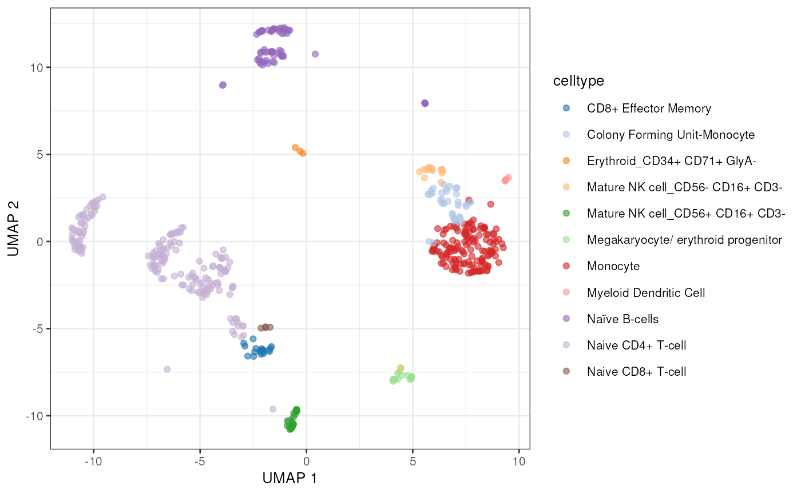

Introducing the raer package
Kent Riemondy
University of Colorado School of MedicineKristen Wells-Wrasman
University of Colorado School of MedicineJay Hesselberth
University of Colorado School of Medicine2023-09-22
Source:vignettes/raer.Rmd
raer.RmdIntroduction
The raer (RNA Adenosine editing in R) package provides tools to characterize A-to-I editing in single cell and bulk RNA-sequencing datasets. Both novel and known editing sites can be detected and quantified beginning with BAM alignment files. At it’s core the raer package uses the pileup routines from the HTSlib C library (Bonfield et al. (2021)) to identify candidate RNA editing sites, and leverages the annotation resources in the Bioconductor ecosystem to further characterize and identify high-confidence RNA editing sites.
Here we demonstrate how to use the raer package to a) quantify known RNA editing in droplet scRNA-seq dataset, b) identify editing sites with condition specific editing in bulk RNA-seq data, and c) predict novel editing sites from bulk RNA-seq.
Characterizing RNA editing sites in scRNA-seq data
Here we will use the raer package to examine RNA editing in droplet-based single cell RNA-seq data. For this example we will examine a scRNA-seq dataset from human PBMC cells provided by 10x Genomics. The single cell data was aligned and processed using the 10x Genomics cellranger pipeline.
The PBMC scRNA-seq dataset from 10x Genomics, along with other needed
files will downloaded and cached using pbmc_10x()from the
raerdata ExperimentHub package. For this vignette, the BAM file
was subset to retain 2 million alignments that overlap human RNA editing
sites on chromosome 16.
library(raer)
library(raerdata)
library(scater)
library(SingleCellExperiment)
library(TxDb.Hsapiens.UCSC.hg38.knownGene)
library(AnnotationHub)
library(SNPlocs.Hsapiens.dbSNP144.GRCh38)
library(ComplexHeatmap)pbmc_10x() returns a list containing a
BamFile object, a GRanges object with known
RNA editing sites from the REDIportal database, and a
SingleCellExperiment populated with the gene expression
data and cell type annotations.
pbmc <- pbmc_10x()
pbmc_bam <- pbmc$bam
editing_sites <- pbmc$sites
sce <- pbmc$sce
plotUMAP(sce, colour_by = "celltype")
Specifying sites to quantify
Next we’ll select editing sites to query. For this analysis we will use RNA editing sites cataloged in the REDIportal database Mansi et al. (2021).
editing_sites## GRanges object with 15638648 ranges and 0 metadata columns:
## seqnames ranges strand
## <Rle> <IRanges> <Rle>
## [1] chr1 87158 -
## [2] chr1 87168 -
## [3] chr1 87171 -
## [4] chr1 87189 -
## [5] chr1 87218 -
## ... ... ... ...
## [15638644] chrY 56885715 +
## [15638645] chrY 56885716 +
## [15638646] chrY 56885728 +
## [15638647] chrY 56885841 +
## [15638648] chrY 56885850 +
## -------
## seqinfo: 44 sequences from hg38 genome; no seqlengthsThe sites to quantify are specified using a custom formatted GRanges
object with 1 base intervals, a strand (+ or -), and supplemented with
metadata columns named REF and ALT containing
the reference and alternate base to query. In this case we are only
interested in A->I editing, so we set the ref and alt to
A and G. Note that the REF and
ALT bases are in reference to strand. For a -
strand interval the bases should be the complement of the +
strand bases. Also note that these bases can be stored as traditional
character vectors or as Rle() objects to save memory.
## GRanges object with 15638648 ranges and 2 metadata columns:
## seqnames ranges strand | REF ALT
## <Rle> <IRanges> <Rle> | <Rle> <Rle>
## [1] chr1 87158 - | A G
## [2] chr1 87168 - | A G
## [3] chr1 87171 - | A G
## [4] chr1 87189 - | A G
## [5] chr1 87218 - | A G
## ... ... ... ... . ... ...
## [15638644] chrY 56885715 + | A G
## [15638645] chrY 56885716 + | A G
## [15638646] chrY 56885728 + | A G
## [15638647] chrY 56885841 + | A G
## [15638648] chrY 56885850 + | A G
## -------
## seqinfo: 44 sequences from hg38 genome; no seqlengthsQuantifying sites in single cells using pileup_cells
pileup_cells() quantifies edited and non-edited UMI
counts per cell barcode, then organizes the site counts into a
SingleCellExperiment object. pileup_cells()
accepts a FilterParam() object that specifies parameters
for multiple read-level and site-level filtering and processing options.
Note that pileup_cells() is strand sensitive by default, so
it is important to ensure that the strand of the input sites is
correctly annotated, and that the library-type is set
correctly for the strandedness of the sequencing library. For 10x
Genomics data, the library type is set to fr-second-strand,
indicating that the strand of the BAM alignments is the same strand as
the RNA. See quantifying smart-seq scRNA-seq
libraries for an example of using pileup_cells() to handle
unstranded data and data from libraries that produce 1 BAM file for each
cell.
To exclude duplicate reads derived from PCR,
pileup_cells() can use a UMI sequence, supplied via the
umi_tag argument, to only count 1 read for each CB-UMI pair
at each editing site position. Note however that by default the
bam_flags argument for the FilterParam class
is set to include duplicate reads when using
pileup_cells(). Droplet single cell libraries produce
multiple cDNA fragments from a single reverse transcription event. The
cDNA fragments have different alignment positions due to fragmentation
despite being derived from a single RNA molecule. scRNA-seq data
processed by cellranger from 10x Genomics will set the “Not primary
alignment” bam flag for every read except one read for each UMI. If
duplicates are removed based on this bam flag, then only 1
representative fragment for a single UMI will be examined, which will
exclude many valid regions.
To reduce processing time many functions in the raer package
operate in parallel across multiple chromosomes. To enable parallel
processing, a BiocParallel backend can be supplied via the
BPPARAM argument (e.g. MultiCoreParam()).
outdir <- file.path(tempdir(), "sc_edits")
cbs <- colnames(sce)
params <- FilterParam(min_mapq = 255, # required alignment MAPQ score
library_type = "fr-second-strand", #library type
min_variant_reads = 1)
e_sce <- pileup_cells(
bamfile = pbmc_bam,
sites = editing_sites,
cell_barcodes = cbs,
output_directory = outdir,
cb_tag = "CB",
umi_tag = "UB",
param = params
)
e_sce## class: SingleCellExperiment
## dim: 3849 500
## metadata(0):
## assays(2): nRef nAlt
## rownames(3849): site_chr16_83540_1_AG site_chr16_83621_1_AG ...
## site_chr16_31453268_2_AG site_chr16_31454303_2_AG
## rowData names(2): REF ALT
## colnames(500): TGTTTGTCAGTTAGGG-1 ATCTCTACAAGCTACT-1 ...
## GGGCGTTTCAGGACGA-1 CTATAGGAGATTGTGA-1
## colData names(0):
## reducedDimNames(0):
## mainExpName: NULL
## altExpNames(0):The outputs from pileup_cells() are a
SingleCellExperiment object populated with
nRef and nAlt assays containing the base
counts for the reference (unedited) and alternate (edited) alleles at
each position.
The sparseMatrices are also written to files, at a directory
specified by output_directory, which can be loaded into R
using the read_sparray() function.
dir(outdir)## [1] "barcodes.txt.gz" "counts.mtx.gz" "sites.txt.gz"
read_sparray(file.path(outdir, "counts.mtx.gz"),
file.path(outdir, "sites.txt.gz"),
file.path(outdir, "barcodes.txt.gz"))## class: SingleCellExperiment
## dim: 3849 500
## metadata(0):
## assays(2): nRef nAlt
## rownames(3849): site_chr16_83540_1_AG site_chr16_83621_1_AG ...
## site_chr16_31453268_2_AG site_chr16_31454303_2_AG
## rowData names(2): REF ALT
## colnames(500): TGTTTGTCAGTTAGGG-1 ATCTCTACAAGCTACT-1 ...
## GGGCGTTTCAGGACGA-1 CTATAGGAGATTGTGA-1
## colData names(0):
## reducedDimNames(0):
## mainExpName: NULL
## altExpNames(0):Next we’ll filter the single cell editing dataset to find sites with
an editing event in at least 5 cells and add the editing counts to the
gene expression SingleCellExperiment as an altExp().
e_sce <- e_sce[rowSums(assays(e_sce)$nAlt > 0) >= 5, ]
e_sce <- calc_edit_frequency(e_sce, edit_from = "Ref", edit_to = "Alt", replace_na = FALSE)
altExp(sce) <- e_sce[, colnames(sce)]With the editing sites added to the gene expression SingleCellExperiment we can use plotting and other methods previously developed for single cell analysis. Here we’ll visualize editing sites with the highest edited read counts.
to_plot <- rownames(altExp(sce))[order(rowSums(assay(altExp(sce), "nAlt")), decreasing = TRUE)]
lapply(to_plot[1:5], function(x) {
plotUMAP(sce, colour_by = x, by_exprs_values = "nAlt")
})## [[1]]
##
## [[2]]##
## [[3]]
##
## [[4]]
##
## [[5]]
Alternatively we can view these top edited sites as a Heatmap, showing the average number of edited reads per site in each cell type.
altExp(sce)$celltype <- sce$celltype
plotGroupedHeatmap(altExp(sce),
features = to_plot[1:25],
group = "celltype",
exprs_values = "nAlt"
)
raer provides additional tools to examine cell type specific editing.
find_scde_sites()will perform statistical testing to identify sites with different editing frequencies between clusters/cell types.calc_scAEI()will calculate the Alu Editing Index (AEI) metric in single cells.
If the editing sites of interest are not known, we recommend
the following approach. First, treat the single cell data as a bulk
RNA-seq experiment, and follow the bulk RNA-seq
workflow to identify putative editing sites. Then query these sites
in single cell mode using pileup_cells()
Quantifying sites in Smart-seq libaries
pileup_cells() can also process Smart-seq style single
cell libraries. These datasets typically store data from each cell in
separate BAM files and the library type for these alignments are
generally unstranded. To process these datasets the
library-type should be set to unstranded, and
the reference editing sites need to be reported all on the
+ strand.
For example, the editing sites on the minus strand will need to be
complemented (set as T -> C rather than A -> G). Additionally the
umi_tag and cb_tag arguments should be set as
follows to disable UMI and cell barcode detection.
# Note these steps are not run
is_minus <- strand(editing_sites) == "-"
editing_sites[is_minus]$REF <- "T"
editing_sites[is_minus]$ALT <- "C"
strand(editing_sites[is_minus]) <- "+"
vector_of_bam_files <- c("cell1.bam", "cell2.bam", "cell3.bam")
vector_of_cell_ids <- c("cell1", "cell2", "cell3")
pileup_cells(bamfiles = vector_of_bam_files,
cell_barcodes = vector_of_cell_ids,
sites = editing_sites,
umi_tag = NULL, # no UMI tag in most smart-seq libraries
cb_tag = NULL) # no cell barcode in most smart-seq librariesQuantifying RNA editing sites in bulk RNA-Seq
Next we will perform a reanalysis of a published bulk RNA-seq dataset, GSE99249, which consists of ADAR1 mutants and control human cell lines, conditionally treated with Interferon-Beta. We will examine data from two genotypes, ADAR1 WT and KO, both treated with Ifn-B, with triplicate samples.
Aligned BAM files and other necessary files have been preprocessed
for this vignette and are available using GSE99249() from
the raerdata package. Calling GSE99249() will
downloaded and cache the necessary files and return a list containing
the data.
## [1] "bams" "fasta" "sites"bams contains a vector of BamFile objects
with the paths to each BAM file. These BAM files are a subset of the
full BAM files, containing alignments from chromosome 18.
bam_files <- ifnb$bams
names(bam_files)## [1] "SRR5564260" "SRR5564261" "SRR5564269" "SRR5564270" "SRR5564271"
## [6] "SRR5564277"To quantify editing sites we will need a FASTA file to compare read alignments to the reference sequence. For space reasons we’ll use a FASTA file containing only chromosome 18 for this demo.
fafn <- ifnb$fastaWe will again use the database of known human editing sites from
REDIPortal, only processing those from chr18.
editing_sites <- ifnb$sites
chr_18_editing_sites <- keepSeqlevels(editing_sites, "chr18", pruning.mode="coarse")Generate editing site read counts using pileup_sites
The pileup_sites() function will process BAM files and
calculate base counts at each supplied position. The
FilterParam() will again be used to specify parameters to
exclude reads and bases based on commonly used filters for detecting
RNA-editing events. Specific regions can also be queried using the
region argument which accepts a samtools style region
specification string (e.g. chr or
chr:start-end).
fp <- FilterParam(
only_keep_variants = TRUE, # only report sites with variants
trim_5p = 5, # bases to remove from 5' or 3' end
trim_3p = 5,
min_base_quality = 30, # minimum base quality score
min_mapq = 255, # minimum MAPQ read score
library_type = "fr-first-strand", # library type
min_splice_overhang = 10 # minimum required splice site overhang
)
rse <- pileup_sites(bam_files,
fasta = fafn,
sites = chr_18_editing_sites,
chroms = "chr18",
param = fp
)
rse## class: RangedSummarizedExperiment
## dim: 6192 6
## metadata(0):
## assays(7): ALT nRef ... nC nG
## rownames(6192): site_chr18_178100_1 site_chr18_184553_1 ...
## site_chr18_80172518_2 site_chr18_80174441_2
## rowData names(4): REF rpbz vdb sor
## colnames(6): SRR5564260 SRR5564261 ... SRR5564271 SRR5564277
## colData names(1): samplePileup data is stored in a RangedSummarizedExperiment
object which facilitates comparisons across samples and conveniently
stores genomic coordinate information. The rowData() and
rowRanges() slots are populated with the reference base
(REF) and information related to each editing site, and
similarly the colData() slot can be used to store sample
metadata.
The base counts and other information are stored in different assays
within the object. REF and ALT bases and base
count data are all provided in a stand specific fashion depending on the
supplied library-type parameter. The REF and
ALT bases are in reference to the strand.
assays(rse)## List of length 7
## names(7): ALT nRef nAlt nA nT nC nG
assay(rse, "nA")[1:5, ]## SRR5564260 SRR5564261 SRR5564269 SRR5564270
## site_chr18_178100_1 2 0 0 1
## site_chr18_184553_1 0 1 1 2
## site_chr18_184659_1 2 0 1 1
## site_chr18_184747_1 1 4 2 4
## site_chr18_185203_1 1 0 1 1
## SRR5564271 SRR5564277
## site_chr18_178100_1 1 2
## site_chr18_184553_1 3 3
## site_chr18_184659_1 2 1
## site_chr18_184747_1 3 2
## site_chr18_185203_1 1 0
assay(rse, "nG")[1:5, ]## SRR5564260 SRR5564261 SRR5564269 SRR5564270
## site_chr18_178100_1 0 0 0 0
## site_chr18_184553_1 0 0 0 0
## site_chr18_184659_1 0 0 0 0
## site_chr18_184747_1 0 0 0 0
## site_chr18_185203_1 0 0 0 0
## SRR5564271 SRR5564277
## site_chr18_178100_1 1 0
## site_chr18_184553_1 1 0
## site_chr18_184659_1 1 0
## site_chr18_184747_1 0 1
## site_chr18_185203_1 0 0Next we’ll add sample information which will be needed for identify sites with differential editing frequencies across genotypes.
colData(rse)$treatment <- "Interferon beta"
colData(rse)$genotype <- factor(rep(c("ADAR1KO","Wildtype"), each = 3))
colData(rse)## DataFrame with 6 rows and 3 columns
## sample treatment genotype
## <character> <character> <factor>
## SRR5564260 SRR5564260 Interferon beta ADAR1KO
## SRR5564261 SRR5564261 Interferon beta ADAR1KO
## SRR5564269 SRR5564269 Interferon beta ADAR1KO
## SRR5564270 SRR5564270 Interferon beta Wildtype
## SRR5564271 SRR5564271 Interferon beta Wildtype
## SRR5564277 SRR5564277 Interferon beta WildtypePrepare for differential editing
raer provides the calc_edit_frequency function
to calculate the editing percentage and read depth at each position.
With the drop = TRUE argument we will also exclude
non-adenosine sites. The editing frequencies will not be used for
differential editing analysis, which will be conducted using the raw
counts, however these are useful for filtering and visualization.
calc_edit_frequency will add two additional assays to the
object, the editing frequency (edit_freq) and read
depth, both computed based on the edit_to and
edit_from counts.
rse <- calc_edit_frequency(rse,
edit_from = "A",
edit_to = "G",
drop = TRUE
)We’ll next filter to exclude low frequency editing events. For this analysis we require that an editing site shows editing in at least 1 sample and has at least 5 counts in each sample.
has_editing <- rowSums(assay(rse, "edit_freq") > 0) >= 1
has_depth <- rowSums(assay(rse, "depth") >= 5) == ncol(rse)
rse <- rse[has_editing & has_depth, ]
rse## class: RangedSummarizedExperiment
## dim: 612 6
## metadata(0):
## assays(9): ALT nRef ... depth edit_freq
## rownames(612): site_chr18_204626_1 site_chr18_212426_1 ...
## site_chr18_79984359_2 site_chr18_79984760_2
## rowData names(4): REF rpbz vdb sor
## colnames(6): SRR5564260 SRR5564261 ... SRR5564271 SRR5564277
## colData names(5): sample treatment genotype n_sites edit_idxOnce the object has been filtered, we will transform it into an
alternative data structure for differential editing analysis that
contains an assay with read counts of both the ALT and
REF alleles in a single matrix.
deobj <- make_de_object(rse, min_prop = 0.05, min_samples = 3)
assay(deobj, "counts")[1:3, c(1,7,2,8)]## SRR5564260_ref SRR5564260_alt SRR5564261_ref
## site_chr18_691546_2 8 0 6
## site_chr18_691578_2 8 0 7
## site_chr18_692372_2 6 0 9
## SRR5564261_alt
## site_chr18_691546_2 0
## site_chr18_691578_2 0
## site_chr18_692372_2 0Run differential editing
At this stage, you can use the object to perform differential
yourself or use find_de_sites() to use edgeR
or DESeq2 to identify condition specific editing events.
For differential editing, we use the design
design <- ~0 + condition:sample + condition:count and
perform testing to compare the edited read counts against unedited read
counts.
deobj$sample <- factor(deobj$sample)
de_results <- find_de_sites(deobj,
test = "DESeq2",
sample_col = "sample",
condition_col = "genotype",
condition_control = "Wildtype",
condition_treatment = "ADAR1KO"
)This returns a list containing the dds object, the full results, the significant results, and the model matrix.
de_results$sig_results[1:5, ]## baseMean log2FoldChange lfcSE stat
## site_chr18_23296417_2 15.500000 -2.450652 0.8459822 -2.896813
## site_chr18_32070144_1 6.666667 -2.631946 1.0760283 -2.445983
## site_chr18_21632030_1 10.000000 -3.377617 1.4959882 -2.257783
## site_chr18_21631237_1 6.666667 -3.381984 1.5541279 -2.176130
## site_chr18_35263230_2 9.333333 -3.403508 1.4894626 -2.285057
## pvalue padj
## site_chr18_23296417_2 0.003769742 0.008216103
## site_chr18_32070144_1 0.014445798 0.024557856
## site_chr18_21632030_1 0.023959185 0.036474262
## site_chr18_21631237_1 0.029545546 0.044059148
## site_chr18_35263230_2 0.022309459 0.035633191
top_sites <- rownames(de_results$sig_results)[1:20]
Heatmap(assay(rse, "edit_freq")[top_sites, ],
name = "editing frequency",
column_labels = paste0(rse$genotype, "-", rse$treatment)
)As anticipated the top identified sites are those with greatly reduced editing in the ADAR1KO samples.
Examine overall editing activites using the Alu Editing Index
For some studies it is informative to assess the overall ADAR editing activity in addition to examining individual editing sites. The Alu Editing Index (AEI), developed by Roth, Levanon, and Eisenberg (2019), is a metric that summarizes that amount of editing occurring at ALU elements which account for the vast majority of A-to-I editing (> 99%) in humans.
raer provides calc_AEI(), based on this
approach, to calculate the AEI metric. Many of the same parameters used
for pileup_sites() are available in
calc_AEI().
First we will use the AnnotationHub package to obtain
coordinates for ALU elements in the human genome. For this example we
will only examine a subset of ALUs on chr18. We will also
use a SNPlocs package, based on the dbSNP database, to
exclude any SNPs overlapping the ALU elements from the AEI calculation.
The SNP coordinates are NCBI based, whereas the
ALU elements are based on hg38, we will
therefore convert between the two as needed to obtain SNP and ALU
element coordinates based on hg38.
ah <- AnnotationHub()
rmsk_hg38 <- ah[["AH99003"]]
alus <- rmsk_hg38[rmsk_hg38$repFamily == "Alu", ]
alus <- alus[seqnames(alus) == "chr18", ]
alus <- keepStandardChromosomes(alus)
alus <- alus[1:1000, ]
seqlevelsStyle(alus) <- "NCBI"
genome(alus) <- "GRCh38.p2"
alu_snps <- get_overlapping_snps(alus, SNPlocs.Hsapiens.dbSNP144.GRCh38)
seqlevelsStyle(alu_snps) <- "UCSC"
alu_snps[1:3, ]## UnstitchedGPos object with 3 positions and 0 metadata columns:
## seqnames pos strand
## <Rle> <integer> <Rle>
## [1] chr18 21651 *
## [2] chr18 21654 *
## [3] chr18 21667 *
## -------
## seqinfo: 25 sequences (1 circular) from hg38 genome
seqlevelsStyle(alus) <- "UCSC"
alus[1:3, ]## GRanges object with 3 ranges and 11 metadata columns:
## seqnames ranges strand | swScore milliDiv milliDel
## <Rle> <IRanges> <Rle> | <integer> <numeric> <numeric>
## [1] chr18 21645-21819 + | 1319 114 0
## [2] chr18 26052-26327 + | 1539 199 7
## [3] chr18 31708-32021 + | 2192 140 0
## milliIns genoLeft repName repClass repFamily repStart
## <numeric> <integer> <character> <character> <character> <integer>
## [1] 0 -80351466 AluSq2 SINE Alu 136
## [2] 0 -80346958 AluJr SINE Alu 1
## [3] 3 -80341264 AluSp SINE Alu 1
## repEnd repLeft
## <integer> <integer>
## [1] 310 -3
## [2] 278 -34
## [3] 313 0
## -------
## seqinfo: 25 sequences (1 circular) from hg38 genomecalc_AEI() returns a matrix containing the AEI
calculated for all allelic combinations and a more detailed table
containing values for each chromosome.
alu_index <- calc_AEI(bam_files,
fasta = fafn,
snp_db = alu_snps,
alu_ranges = alus,
param = fp)
names(alu_index)## [1] "AEI" "AEI_per_chrom"
Heatmap(alu_index$AEI,
name = "AEI",
row_labels = rse$genotype[match(rownames(alu_index$AEI), rse$sample)]
)The AEI in the Wildtype samples is highest for
A-to-G, and sharply reduced in the ADAR1KO
samples as expected.
Novel RNA editing site detection
Next we will demonstrate how to identify novel RNA editing sites
using the raer package. In this analysis a published RNA-seq
and whole genome sequencing dataset will be analyzed. High coverage
whole-genome sequencing was conducted ERR262997
along with paired-end RNA-seq SRR1258218
in a human cell line (NA12878).
Aligned BAM files, a genome fasta file, and a GRanges object
containing SNPs corresponding to the first 1Mb region of chr4 have been
prepared for this vignette and can be downloaded and cached using
NA12878().
## [1] "bams" "fasta" "snps"Additionally we will use the following additional annotation resources:
A database of known SNPs, for example the
SNPlocs.Hsapiens.dbSNP155.GRCh38package. Due to space and memory constraints in this vignette we will only examine SNPs from the first 1Mb region of chr4.TxDb.Hsapiens.UCSC.hg38.knownGene, a database of transcript models. Alternatively these can be generated from a.gtffile usingmakeTxDbFromGRanges()from theGenomicFeaturespackage.RepeatMasker annotations, which can be obtained from the
AnnotationHub()for hg38, as shown in the bulk RNA-seq tutorial.
txdb <- TxDb.Hsapiens.UCSC.hg38.knownGene
chr4snps <- rna_wgs$snpsThe pileup_sites() function accept multiple bam files,
here we supply one from RNA-seq, and one from whole genome sequencing. A
subset of the filtering parameters (FilterParam()) can
accept multiple arguments matched to each of the input bam files. This
allows us to have distinct settings for the WGS and RNA-seq BAM
files.
bams <- rna_wgs$bams
names(bams) <- c("rna", "dna")
fp <- FilterParam(
min_depth = 1, # minimum read depth across all samples
min_base_quality = 30, # minimum base quality
min_mapq = c(255, 30), # minimum MAPQ for each bam file
library_type = c("fr-first-strand", "unstranded"), # library-type for each bam file
trim_5p = 5, # bases to trim from 5' end of alignment
trim_3p = 5, # bases to trim from 3' end of alignment
indel_dist = 4, # ignore read if contains an indel within distance from site
min_splice_overhang = 10, # required alignment overhang in order to count read with splice
read_bqual = c(0.25, 20), # minimum fraction of the read (0.25) that must have base quality of (20)
only_keep_variants = c(TRUE, FALSE), # report site if rnaseq bam has variant
report_multiallelic = FALSE, # do not report sites with multiple variant alleles
)
rse <- pileup_sites(bams,
fasta = rna_wgs$fasta,
chroms = "chr4",
param = fp
)
rse## class: RangedSummarizedExperiment
## dim: 1035 2
## metadata(0):
## assays(7): ALT nRef ... nC nG
## rownames(1035): site_chr4_40244_2 site_chr4_44338_2 ...
## site_chr4_995145_1 site_chr4_998975_1
## rowData names(4): REF rpbz vdb sor
## colnames(2): rna dna
## colData names(1): sampleNext we filter to keep those sites with a variant in the RNA-seq, but
no variant in the DNA-seq, and a minimum of 5 reads covering the site in
the DNA-seq. The DNA-seq data is unstranded, and therefore will be
reported on the “+” strand whereas the RNA-seq data will be reported on
expressing RNA strand. We therefore use
subsetByOverlaps(..., ignore.strand = TRUE) to retain sites
passing these DNA-seq based filters independent of strand.
to_keep <- (assay(rse, "nRef")[, "dna"] >= 5 & assay(rse, "ALT")[, "dna"] == "-")
rse <- subsetByOverlaps(rse, rse[to_keep, ], ignore.strand = TRUE)
nrow(rse)## [1] 339Next we filter to remove any multiallelic sites. These sites are
stored as comma-separated strings in the ALT assay
(e.g. G,C). Non-variant sites are stored as -.
filter_multiallelic() will remove any sites that have
multiple variants in the samples present in the
summarizedExperiment object. It will add a new column to
the rowData() to indicate the variant for each site, and
will calculate an edit_freq assay with variant allele
frequencies for each sample.
rse <- filter_multiallelic(rse)
rse <- calc_edit_frequency(rse)
rowData(rse)## DataFrame with 260 rows and 5 columns
## REF rpbz vdb sor ALT
## <character> <numeric> <numeric> <numeric> <character>
## site_chr4_124551_1 G -1.138153 Inf 1.42563 A
## site_chr4_124611_1 T -0.266758 Inf 1.60944 G
## site_chr4_124781_1 T -1.656293 Inf 1.45499 G
## site_chr4_124820_1 C -0.600205 Inf 1.51787 A
## site_chr4_124940_1 C -0.754898 Inf 1.24398 G
## ... ... ... ... ... ...
## site_chr4_992535_1 G -0.661008 Inf 1.499465 T
## site_chr4_993342_1 A 0.802887 Inf 0.260455 G
## site_chr4_994239_1 A 1.412126 Inf 1.425634 G
## site_chr4_995144_1 A 0.387298 Inf 1.491655 G
## site_chr4_995145_1 A 0.522233 Inf 1.464766 GNext we’ll remove sites in simple repeat regions. We will add repeat
information to the rowData() using the
annot_from_gr() function.
# subset both to chromosome 4 to avoid warning about different seqlevels
seqlevels(rse, pruning.mode = "coarse") <- "chr4"
seqlevels(rmsk_hg38, pruning.mode = "coarse") <- "chr4"
rse <- annot_from_gr(rse, rmsk_hg38, cols_to_map = c(c("repName", "repClass", "repFamily")))
rowData(rse)[c("repName", "repFamily")]## DataFrame with 260 rows and 2 columns
## repName repFamily
## <Rle> <Rle>
## site_chr4_124551_1 NA NA
## site_chr4_124611_1 NA NA
## site_chr4_124781_1 NA NA
## site_chr4_124820_1 NA NA
## site_chr4_124940_1 NA NA
## ... ... ...
## site_chr4_992535_1 NA NA
## site_chr4_993342_1 NA NA
## site_chr4_994239_1 AluJr Alu
## site_chr4_995144_1 NA NA
## site_chr4_995145_1 NA NANext we’ll remove sites adjacent to other sites with different variant types. For example if an A->G variant is located proximal to a C->T variant then the variants will be removed.
seqlevels(txdb, pruning.mode = "coarse") <- "chr4"
rse <- filter_clustered_variants(rse, txdb, variant_dist = 100)
rse## class: RangedSummarizedExperiment
## dim: 159 2
## metadata(0):
## assays(9): ALT nRef ... depth edit_freq
## rownames(159): site_chr4_124940_1 site_chr4_126885_1 ...
## site_chr4_995144_1 site_chr4_995145_1
## rowData names(8): REF rpbz ... repClass repFamily
## colnames(2): rna dna
## colData names(3): sample n_sites edit_idxNext, we’ll annotate if the site is a known SNP and remove any known
SNPs. If using a SNPlocs package you can use the
annot_snps() function, which also allows one to compare the
variant base to the SNP variant base. Here we will use the
annot_from_gr() function to annotate using the
chr4snps object and coarsely remove any editing sites
overlapping the same position as a SNP.
rse <- annot_from_gr(rse, chr4snps, "name")
rowData(rse)[c("name")]## DataFrame with 159 rows and 1 column
## name
## <Rle>
## site_chr4_124940_1 rs1361822847
## site_chr4_126885_1 NA
## site_chr4_126955_1 NA
## site_chr4_133310_1 NA
## site_chr4_133971_1 rs998760640
## ... ...
## site_chr4_992535_1 rs1714447589
## site_chr4_993342_1 NA
## site_chr4_994239_1 NA
## site_chr4_995144_1 rs1217215121
## site_chr4_995145_1 NA## class: RangedSummarizedExperiment
## dim: 100 2
## metadata(0):
## assays(9): ALT nRef ... depth edit_freq
## rownames(100): site_chr4_126885_1 site_chr4_126955_1 ...
## site_chr4_994239_1 site_chr4_995145_1
## rowData names(9): REF rpbz ... repFamily name
## colnames(2): rna dna
## colData names(3): sample n_sites edit_idxLastly, we’ll further filter the edit sites to require that the editing frequency is > 0.05 and that at least 2 reads support the editing site.
to_keep <- assay(rse, "edit_freq")[, 1] > 0.05
rse <- rse[to_keep, ]
rse <- rse[assay(rse, "nAlt")[, 1] >= 2]With the above filtering approach we obtain a set of putative editing sites. The specificity of the filtering can be estimated by examining the number of A-to-G changes relative to other variants. A-to-I RNA editing is more common than other types of editing (e.g. C->U editing by APOBEC enzymes) in human datasets so the majority of the variants should by A-to-G. In this vignette data all of the identified sites are A-to-G.
rowRanges(rse)## GRanges object with 10 ranges and 9 metadata columns:
## seqnames ranges strand | REF rpbz
## <Rle> <IRanges> <Rle> | <character> <numeric>
## site_chr4_126885_1 chr4 126885 + | A 0.342818
## site_chr4_134353_1 chr4 134353 + | A -0.264728
## site_chr4_348458_1 chr4 348458 + | A -0.252166
## site_chr4_378548_1 chr4 378548 + | A 1.406115
## site_chr4_379540_1 chr4 379540 + | A -1.949107
## site_chr4_379558_1 chr4 379558 + | A -0.803727
## site_chr4_380392_1 chr4 380392 + | A -0.207575
## site_chr4_380573_1 chr4 380573 + | A -1.918805
## site_chr4_778739_2 chr4 778739 - | A 1.109806
## site_chr4_778780_2 chr4 778780 - | A -1.469323
## vdb sor ALT repName repClass
## <numeric> <numeric> <character> <Rle> <Rle>
## site_chr4_126885_1 0.7000000 1.061473 G <NA> <NA>
## site_chr4_134353_1 0.4310148 0.252306 G <NA> <NA>
## site_chr4_348458_1 0.8000000 0.168623 G AluSx1 SINE
## site_chr4_378548_1 0.2800000 2.833213 G <NA> <NA>
## site_chr4_379540_1 0.2200000 1.243978 G <NA> <NA>
## site_chr4_379558_1 0.0200000 0.446287 G <NA> <NA>
## site_chr4_380392_1 0.5689852 0.910414 G AluSq2 SINE
## site_chr4_380573_1 0.1000000 2.285077 G AluSq2 SINE
## site_chr4_778739_2 0.1918587 0.604657 G AluSg SINE
## site_chr4_778780_2 0.0490877 2.821974 G AluSg SINE
## repFamily name
## <Rle> <Rle>
## site_chr4_126885_1 <NA> <NA>
## site_chr4_134353_1 <NA> <NA>
## site_chr4_348458_1 Alu <NA>
## site_chr4_378548_1 <NA> <NA>
## site_chr4_379540_1 <NA> <NA>
## site_chr4_379558_1 <NA> <NA>
## site_chr4_380392_1 Alu <NA>
## site_chr4_380573_1 Alu <NA>
## site_chr4_778739_2 Alu <NA>
## site_chr4_778780_2 Alu <NA>
## -------
## seqinfo: 1 sequence from an unspecified genomeFinally once a set of sites has been identified, additional packges in the bioconductor ecosystem, such the VariantAnnotation package, can be used to determine the genomic context and potential molecular consequences of the editing event.
Session info
## R version 4.3.1 (2023-06-16)
## Platform: x86_64-pc-linux-gnu (64-bit)
## Running under: Ubuntu 22.04.3 LTS
##
## Matrix products: default
## BLAS: /usr/lib/x86_64-linux-gnu/openblas-pthread/libblas.so.3
## LAPACK: /usr/lib/x86_64-linux-gnu/openblas-pthread/libopenblasp-r0.3.20.so; LAPACK version 3.10.0
##
## locale:
## [1] LC_CTYPE=en_US.UTF-8 LC_NUMERIC=C
## [3] LC_TIME=en_US.UTF-8 LC_COLLATE=en_US.UTF-8
## [5] LC_MONETARY=en_US.UTF-8 LC_MESSAGES=en_US.UTF-8
## [7] LC_PAPER=en_US.UTF-8 LC_NAME=C
## [9] LC_ADDRESS=C LC_TELEPHONE=C
## [11] LC_MEASUREMENT=en_US.UTF-8 LC_IDENTIFICATION=C
##
## time zone: UTC
## tzcode source: system (glibc)
##
## attached base packages:
## [1] grid stats4 stats graphics grDevices utils datasets
## [8] methods base
##
## other attached packages:
## [1] Rsamtools_2.17.0
## [2] ComplexHeatmap_2.17.0
## [3] SNPlocs.Hsapiens.dbSNP144.GRCh38_0.99.20
## [4] BSgenome_1.69.0
## [5] rtracklayer_1.61.1
## [6] Biostrings_2.69.2
## [7] XVector_0.41.1
## [8] AnnotationHub_3.9.2
## [9] BiocFileCache_2.9.1
## [10] dbplyr_2.3.3
## [11] TxDb.Hsapiens.UCSC.hg38.knownGene_3.18.0
## [12] GenomicFeatures_1.53.2
## [13] AnnotationDbi_1.63.2
## [14] scater_1.29.4
## [15] ggplot2_3.4.3
## [16] scuttle_1.11.2
## [17] SingleCellExperiment_1.23.0
## [18] SummarizedExperiment_1.31.1
## [19] Biobase_2.61.0
## [20] GenomicRanges_1.53.1
## [21] GenomeInfoDb_1.37.4
## [22] IRanges_2.35.2
## [23] S4Vectors_0.39.1
## [24] BiocGenerics_0.47.0
## [25] MatrixGenerics_1.13.1
## [26] matrixStats_1.0.0
## [27] raerdata_0.99.2
## [28] raer_0.99.13
## [29] BiocStyle_2.29.2
##
## loaded via a namespace (and not attached):
## [1] later_1.3.1 BiocIO_1.11.0
## [3] bitops_1.0-7 filelock_1.0.2
## [5] tibble_3.2.1 R.oo_1.25.0
## [7] XML_3.99-0.14 lifecycle_1.0.3
## [9] doParallel_1.0.17 rprojroot_2.0.3
## [11] lattice_0.21-8 magrittr_2.0.3
## [13] sass_0.4.7 rmarkdown_2.25
## [15] jquerylib_0.1.4 yaml_2.3.7
## [17] httpuv_1.6.11 DBI_1.1.3
## [19] RColorBrewer_1.1-3 abind_1.4-5
## [21] zlibbioc_1.47.0 purrr_1.0.2
## [23] R.utils_2.12.2 RCurl_1.98-1.12
## [25] rappdirs_0.3.3 circlize_0.4.15
## [27] GenomeInfoDbData_1.2.10 ggrepel_0.9.3
## [29] irlba_2.3.5.1 pheatmap_1.0.12
## [31] pkgdown_2.0.7 DelayedMatrixStats_1.23.4
## [33] codetools_0.2-19 DelayedArray_0.27.10
## [35] xml2_1.3.5 tidyselect_1.2.0
## [37] shape_1.4.6 farver_2.1.1
## [39] ScaledMatrix_1.9.1 viridis_0.6.4
## [41] GenomicAlignments_1.37.0 jsonlite_1.8.7
## [43] GetoptLong_1.0.5 BiocNeighbors_1.19.0
## [45] ellipsis_0.3.2 iterators_1.0.14
## [47] systemfonts_1.0.4 foreach_1.5.2
## [49] tools_4.3.1 progress_1.2.2
## [51] ragg_1.2.5 Rcpp_1.0.11
## [53] glue_1.6.2 gridExtra_2.3
## [55] SparseArray_1.1.12 xfun_0.40
## [57] DESeq2_1.41.10 dplyr_1.1.3
## [59] withr_2.5.0 BiocManager_1.30.22
## [61] fastmap_1.1.1 fansi_1.0.4
## [63] digest_0.6.33 rsvd_1.0.5
## [65] R6_2.5.1 mime_0.12
## [67] textshaping_0.3.6 colorspace_2.1-0
## [69] Cairo_1.6-1 biomaRt_2.57.1
## [71] RSQLite_2.3.1 R.methodsS3_1.8.2
## [73] utf8_1.2.3 generics_0.1.3
## [75] data.table_1.14.8 prettyunits_1.1.1
## [77] httr_1.4.7 S4Arrays_1.1.6
## [79] pkgconfig_2.0.3 gtable_0.3.4
## [81] blob_1.2.4 htmltools_0.5.6
## [83] bookdown_0.35 clue_0.3-64
## [85] scales_1.2.1 png_0.1-8
## [87] knitr_1.44 rjson_0.2.21
## [89] curl_5.0.2 cachem_1.0.8
## [91] GlobalOptions_0.1.2 stringr_1.5.0
## [93] BiocVersion_3.18.0 parallel_4.3.1
## [95] vipor_0.4.5 restfulr_0.0.15
## [97] desc_1.4.2 pillar_1.9.0
## [99] vctrs_0.6.3 promises_1.2.1
## [101] BiocSingular_1.17.1 beachmat_2.17.16
## [103] xtable_1.8-4 cluster_2.1.4
## [105] beeswarm_0.4.0 evaluate_0.21
## [107] cli_3.6.1 locfit_1.5-9.8
## [109] compiler_4.3.1 rlang_1.1.1
## [111] crayon_1.5.2 labeling_0.4.3
## [113] fs_1.6.3 ggbeeswarm_0.7.2
## [115] stringi_1.7.12 viridisLite_0.4.2
## [117] BiocParallel_1.35.4 munsell_0.5.0
## [119] Matrix_1.6-1.1 ExperimentHub_2.9.1
## [121] hms_1.1.3 sparseMatrixStats_1.13.4
## [123] bit64_4.0.5 KEGGREST_1.41.0
## [125] shiny_1.7.5 interactiveDisplayBase_1.39.0
## [127] memoise_2.0.1 bslib_0.5.1
## [129] bit_4.0.5